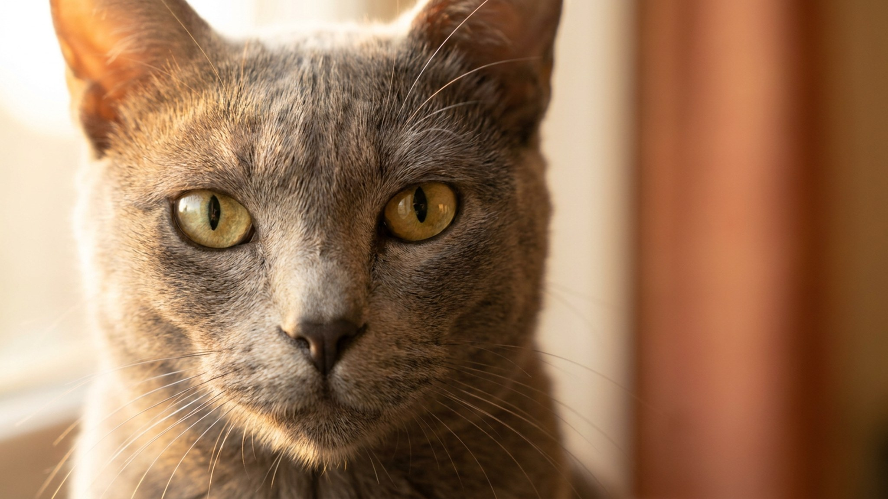

В Таиланде кората дарят молодожёнам как символ благополучия — эту породу там знают несколько веков. За пределами Азии корат всё ещё редкость: в России их единицы. Между тем это одна из самых интересных пород по характеру — умная, преданная и при этом откровенно ревнивая к вниманию. Рассказываем, что делает кората особенным и подходит ли эта кошка для жизни в современной квартире.
🐾 Всё о вашем питомце — в одном приложении
AI-ветеринар, дневник, напоминания о прививках и уходе. Установите AnimaLife — это бесплатно, в Telegram и MAX.
Корат — одна из старейших пород Юго-Восточной Азии. Упоминания о серебристо-голубой кошке с зелёными глазами встречаются в тайских манускриптах XIV века. В провинции Корат (откуда и название) таких кошек традиционно дарили в знак уважения и добрых пожеланий — особенно молодым парам. Пара коратов символизировала достаток и гармонию.
В Европу порода попала только в 1960-х, а число питомников до сих пор невелико. Это означает одно практическое следствие: если вы решились на кората, котёнка придётся ждать и искать заранее.
Шерсть кората — короткая, без подшёрстка, плотно прилегающая к телу. Каждый волосок у корня тёмный, к кончику светлеет — это и создаёт эффект серебристого свечения. На ярком свету шерсть буквально переливается. Окрас один: голубовато-серый с серебряным типингом.
Глаза у кората крупные, ярко-зелёные — у котят они сначала янтарные и зеленеют к 2–4 годам. Голова сердцевидная, тело среднее и мускулистое — порода выглядит изящно, но при этом весома и плотна на ощупь.
Корат не просто привязывается к хозяину — он выбирает «своего» человека и следит за ним по квартире. Это не навязчивость, а именно преданность: порода социальная и плохо переносит изоляцию. Если в доме несколько людей, корат всё равно выделит одного главного.
🐾 Спросите AI-ветеринара прямо сейчас
AnimaLife — приложение, где AI-ветеринар отвечает на вопросы о кошке или собаке 24/7. Бесплатно, без записи и очередей.
🐾 Понравился разбор?
Подпишитесь на канал — каждый день разбираем по одному тревожному симптому у кошек и собак: что в пределах нормы, а когда пора к врачу. Подпишитесь, чтобы не пропустить разбор, который может спасти здоровье вашего питомца.
С точки зрения груминга корат — одна из самых простых пород. Короткая шерсть без подшёрстка почти не линяет и не образует колтунов. Достаточно раз в неделю провести по шерсти замшей или мягкой щёткой — и кошка выглядит идеально. Купать нужно редко, только при необходимости.
Сложнее с социализацией. Корат, выросший в изоляции или без разнообразного общения в первые месяцы жизни, может стать замкнутым и тревожным. Котёнка важно с ранних недель знакомить с разными людьми, звуками и ситуациями — это закладывает уверенного взрослого кота.
В квартире корат живёт комфортно: порода не требует больших пространств, но требует вашего времени. Если вы часто в разъездах или работаете на две смены — подумайте, не завести ли сразу двух, чтобы кошке было с кем общаться в ваше отсутствие.
Материал носит информационный характер и не заменяет очную консультацию ветеринара.